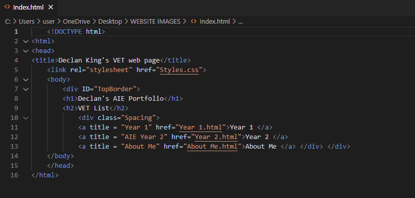
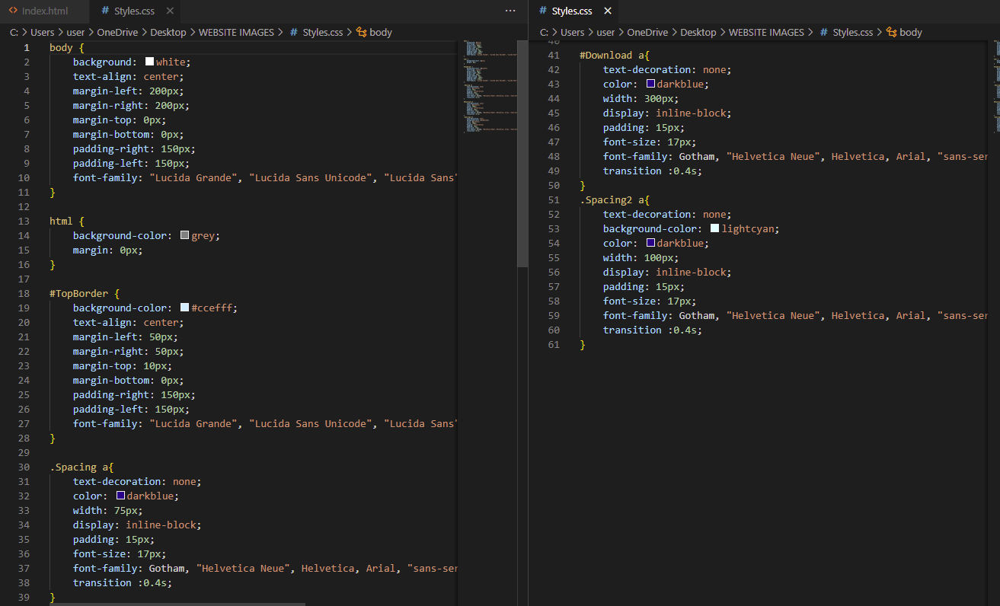
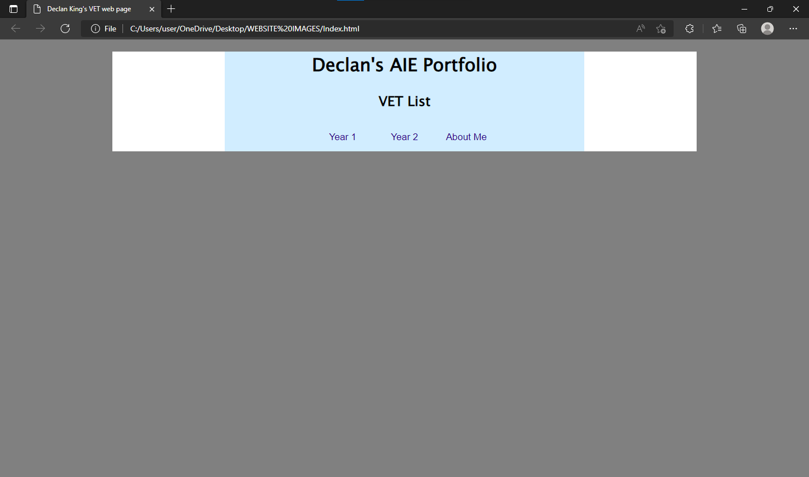
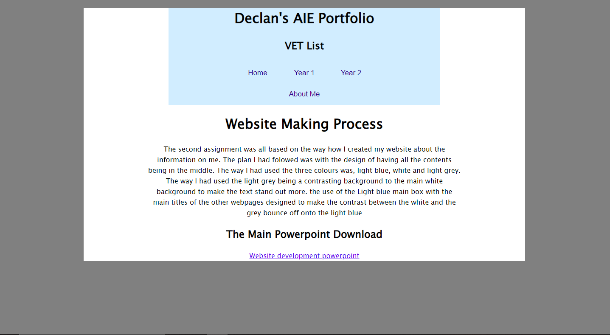

In this unit of study, we are to learn CSS and HTML to be able to create a functional website for a portfolio across this course. What is required is to research different website templates, colour schemes and apply the different fundamentals that connect your website to your different units.
In this image I have made a simple Index page by displaying no content and having a navagation bar under the main title of my website.
This is all the CSS code that has gone into the works of my Index page along with the content pages.
This is the final product of the Index page for my first website.
This is how I had created my content page for my assessments.
My process of creating my website was to stick to simple colours, layout and text. I had stuck with 3 varying colours; grey, blue and white, the colours look more professional and they hold contrast with text, another note is that the colours didn’t cause eye strain while looking at the website. When exploring the different colour choices, I had originally gone for a darker tone of blue while keeping the colour of my text black which didn’t reflect well. Due to this, I changed the tone of blue to make it lighter for the black text which then reflected nicely. Lastly, I had to figure out a nice backing for the sides of my website, so I went through and eliminated the darker colours to have a light balance. I learned some new skills when creating a nav bar by adding links to different parts of my website. The way the nav bar sits places it at the center of the top border. Learning different skills with HTML and CSS helps broaden my skills on what I could be capable of when using HTML & CSS. On the content parts of my website, I have given a very brief rundown of what needed to be done and what had been done. On the other hand, when I talked about myself, I broke it up into small sections of ‘why I want to do this course’ and a small blurb about myself. Some of the feedback given was around having too many HTML files, as I made one for almost every page.